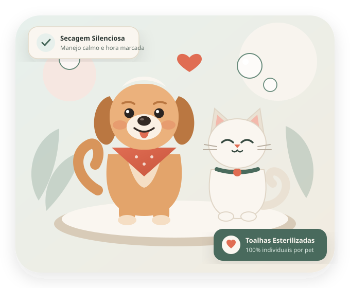
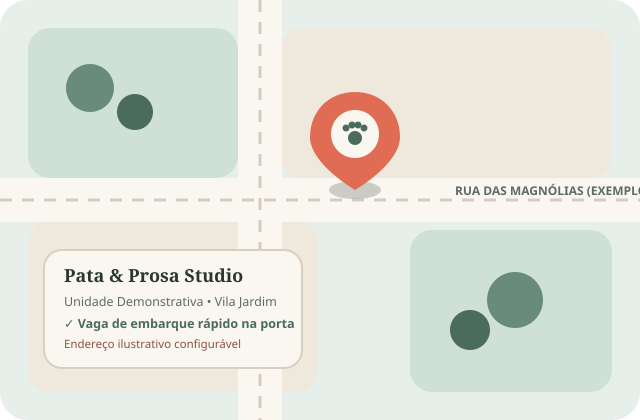

Linha 100% Hipoalergênica
Xampus e máscaras biodegradáveis com pH fisiológico seguro para peles sensíveis.
Na Pata & Prosa, cada atendimento é com hora marcada para evitar esperas longas e barulho excessivo. Usamos toalhas individuais esterilizadas, cosméticos hipoalergênicos e temos horário exclusivo para felinos.

Xampus e máscaras biodegradáveis com pH fisiológico seguro para peles sensíveis.
Equipamentos silenciosos, temperatura morna controlada e protetores auriculares macios.
Higienizadas termicamente e lacradas individualmente para cada pet atendido.
Atendimento felino em sala reservada, livre de latidos e odores de cães.
Filtre pelo perfil do seu companheiro e escolha o cuidado ideal. Todos os banhos incluem limpeza auricular externa, corte de unhas e escovação completa.
Exibindo 6 opções para todos os pets e pacotes.
* Valores de referência demonstrativos para porte pequeno. Utilize o simulador abaixo para ver a estimativa conforme o porte do seu pet. Importante: não realizamos procedimentos clínicos, sedação ou consultas veterinárias.
Selecione o porte ou espécie, o cuidado principal e opcionais para consultar nossa tabela demonstrativa. Você pode enviar a simulação direto para o pré-agendamento.
Desenhamos cada etapa para que o banho seja uma experiência positiva, segura e previsível para o pet e para você.
Ao chegar no horário combinado, conversamos sobre o comportamento do seu pet, avaliamos a pelagem e ouvidos junto com você e alinhamos o comprimento da tosa e o valor exato.
Utilizamos água em temperatura agradável, produtos hipoalergênicos, bancadas antiderrapantes e sopradores de ruído reduzido. Respeitamos pausas para água fresca em pets idosos ou filhotes.
Após a escovação final, enviamos uma mensagem no seu WhatsApp avisando que seu amigo está pronto, cheiroso e descansando em espaço amplo até você chegar.
Veja exemplos ilustrativos dos resultados de escovação, desembolo, hidratação e tosa na tesoura. Clique em qualquer card para ampliar os detalhes no painel acessível.
Manter a frequência de banho evita nós dolorosos, reduz a queda de pelos pela casa e garante economia com horário fixo reservado na agenda.
Os depoimentos abaixo são modelos ilustrativos de demonstração e devem ser substituídos por avaliações reais autorizadas pelos clientes da unidade.
Respondemos com clareza às principais dúvidas sobre segurança, produtos utilizados, atendimento felino e funcionamento do pré-agendamento.
Endereço fictício demonstrativo configurável no arquivo assets/js/config.js. Projetado com vaga de embarque rápido para facilitar a chegada com seu pet.
Terça a Sexta: 08h30 às 18h30 • Sábados: 08h30 às 17h00
Domingos, Segundas e Feriados: fechado para higienização.

Preencha os dados básicos abaixo para gerarmos sua mensagem organizada. Importante: este formulário não confirma reserva automática; nossa equipe responderá pelo WhatsApp ou e-mail confirmando o horário disponível.